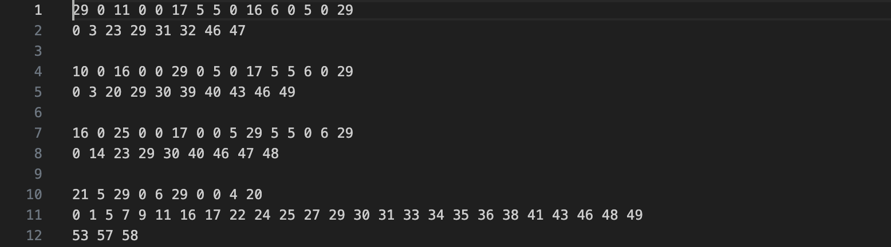

Supply Chain
Modeling project
Overview
The work on this page is part of my contribution to research conducted by University of San Francisco professor Vijay Mehrotra. This project involves using graph databases to simulate a million possible supply chain states, and applies an evolutionary machine learning algorithm (GAIA) to identify patterns that lead to catastrophic supply chain failures. This project has captured my interest because of the opportunities to apply concepts that I learned in a pure mathematics context, such as graph theory, to real world creative problem solving.
Thus far, my primary responsibility in the project has been integrating the machine learning algorithm with the rest of the project’s workflow. When I joined the project, Prof. Mehrotra and his collaborators had already developed a method for simulating supply chain conditions and chosen GAIA as a way to identify discriminative subgraph patterns in the resulting data. Graph Classification using Evolutionary Computation (GAIA) is an algorithm developed by Ning Jin, Calvin Young, and Wei Wang of the University of North Carolina at Chapel Hill in 2010. It was chosen for its ability to identify large discriminative subgraph patterns with high discriminative power with comparatively low computational complexity.
In broad strokes, this algorithm takes one set of ‘positive’ graphs and one set of ‘negative’ graphs, with each graph having the same or an overlapping set of nodes to the other graphs, but a unique set of edges connecting those nodes. It uses evolutionary computation to identify structures that appear frequently in the positive graphs, but not in the negative ones. These structures are referred to as discriminative subgraph patterns. At the end of the evolutionary computation process, the algorithm has identified many candidate patterns with varying discriminative power. It then uses a simple rule selection method to select the candidates which individually are the most strongly predictive and culls the rest. The presence or absence of these highly discriminative subgraph patterns can then be used to predict whether or not a new graph will exhibit the positive trait.
In the case of this project, the nodes of each graph represent the source of some good (like a mine or factory) and the edges proceeding from that node represent the ability of that producer to make their product and transport it to another node. A graph is deemed positive if the cost of operating under the conditions of that graph was above a certain threshold and negative otherwise.
I was brought onto this project to develop a way to convert the data from Prof. Mehrotra’s simulations to the form that the GAIA code required. While he and I were going through the documentation for GAIA, he expressed frustration with the method that GAIA used to pare down the candidate list after the evolutionary computation had completed. He said he would have preferred to use a method that could account for things like differing predictive power when two disconnected subgraph patterns co-occur in the same graph. Although the code for GAIA was written in C++ (which I had no direct experience with), I had a strong understanding of the algorithm and I wanted to contribute what I could to a project this interesting, so I volunteered to edit the code to make this possible. I will explore each of these steps in greater detail below.
Data Conversion for GAIA Inputs
The results of the simulationa are stored in an excel file with the following format:

Each row represents one edge in one graph. ‘GraphID’ identifies the graph in which this edge exists, ‘From’ and ‘To’ identify the origin and destination nodes respectively for that edge, ‘Prod’ identifies what product would be transported along that edge, ‘CostPerUnit’ is self explanatory, and ‘MaxFlow’ indicates how many units of product are able to be produced and transported on this edge. Other information is stored in columns G and beyond, but it's not relevent for this task.
GAIA requires a Config file, a Node file, and an Edge file. The Config file provides information like the number of positive graphs in the sample and the number of candidates that the algorithm should consider for each graph, all of which can be entered manually.
The node file contains one row for each node in each graph in the sample. Each row has four columns: the first stores information about the node that is not used for pattern mining, the second stores the GraphID of the graph in which it appears, the third stores the NodeID, and the fourth stores the node label.
The edge file contains one row for each edge in each graph. Each row has one column for extra information (for our purposes, this is a string with the origin and destination node IDs), one for the graph ID in which the node appears, one for each of the origin and destination node IDs, and one for the edge label (same as the extra information column). The purpose of the code below is to create the input files for GAIA using the Excel file.
Input Conversion Code
My first step was to read in the necessary data from the excel.
import pandas as pd
df = pd.read_excel('SampleFile.xlsm')
df = df.iloc[:,:6]
n = df.iloc[-1].GraphID # count of graphs
GraphID_List = list(range(1,n+1))Creating the Node.txt File
Next, I had to create the node labels by concatenating the ‘From’+‘Prod’ and ‘To’+‘Prod’ columns row-wise, joining those two lists, and dropping any duplicates.
df['H'] = df['From'] + '-' + df['Prod']
df['I'] = df['To'] + '-' + df['Prod']
Node_Table = pd.concat([df['H'],df['I']])
Node_Table.drop_duplicates(inplace = True, ignore_index = True)
Node_Names = list(Node_Table)
Node_Table = Node_Table.to_frame().reset_index().rename(columns={'index': 'NodeID', 0: 'Node_Name'})
Node_Table.NodeID += 1
This code creates the following table.

To complete the Node.txt file I needed to add an ‘extra information’ column and a GraphID column to this table.
graphID_col = [1]*len(Node_Table)
temp_table = pd.DataFrame({'Node_ID_copy':Node_Table['NodeID'],'GraphID':[1]*len(Node_Table)})
Node_Table = pd.concat([temp_table,Node_Table], axis = 1)
And then write this table to a .txt file
import numpy as np
with open('node_file_1.txt', 'w') as file:
for graph in GraphID_List:
values = Node_Table.values
np.savetxt(file, values, delimiter=" ",fmt='%s')
Node_Table['GraphID'] += 1Creating the Edge.txt File
The following code filters the original data frame for edges with positive MaxFlow, alters the format of the resulting data frame to match that required for the Edge.txt file, and writes it. The table below the code shows the first five rows of the resulting Edge_All data frame.
Edge_All = df[df.MaxFlow > 0][['GraphID','H', 'I']].copy()
Edge_All.rename(columns={'H': 'ANN_Source', 'I':'ANN_Sink'}, inplace=True)
Edge_All['Edge_Name'] = Edge_All.ANN_Source + Edge_All.ANN_Sink
e_name = Edge_All.Edge_Name
Edge_All.insert(loc=0, column='edge_name_copy', value = e_name)
Edge_All.head()
with open('edge_file.txt', 'w') as edge_file:
np.savetxt(edge_file, Edge_All.values, delimiter= ' ', fmt = '%s')
Testing Input Conversion Script
This script will have to handle large amounts of data, so I did some testing to confirm that it would be able to run in a reasonable amount of time.
In reviewing my code, I found that each action should either run in constant time or scale linearly with the number of graphs in the sample, so I expected to find that the time complexity of my code approaches O(N) as the number of graphs increases. To test this, I created test cases with 1, 10, 100, and 1000 graphs. I then used the %timeit line magic to get the average run time of 7 loops with each file.
import matplotlib.pyplot as plt
files = ['1_graph_sample.xlsm', '10_graph_sample.xlsm', '100_graph_sample.xlsm', '1000_graph_sample.xlsm']
g_times = {}
for i in range(len(files)):
res = %timeit -o script(files[i])
g_times[10**i] = res.average
lists = sorted(g_times.items())
num_graphs, run_time = zip(*lists)
plt.plot(num_graphs, run_time, marker='o')
plt.yscale('log')
plt.xscale('log')
plt.gca().spines[['top', 'right']].set_visible(False)
for i, (xi, yi) in enumerate(zip(num_graphs, run_time)):
plt.annotate(f'({xi}, {round(yi, 3)})', (xi, yi), textcoords="offset fontsize", xytext=(.5, -.5))
plt.ylabel('Run Time (seconds)')
plt.xlabel('Number of Graphs')
plt.show()
My interpretation of the results is that some O(1) task that takes roughly 30ms dominates the run time with fewer graphs, but with more graphs the run time approaches O(N). This is encouraging, as it suggests that the runtime will not balloon exponentially with the final, larger data set.
I tested the time complexity with respect to the number of nodes/edges per graph using a similar method as well. I expected this to come out to O(N*LogN) because the pandas drop duplicates function (which I use to create the nodes table) sorts the elements before searching for duplicates, and this sort function has N*LogN time complexity, while the other operations in this script are O(1) or O(N). This is more or less confirmed by my testing.

This is okay because the final dataset scales up the number of graphs significantly, but not the number of nodes per graph. It is possible to remove duplicates in O(N) time, and that may be worth testing depending on the size of the final data set; however this operation is performed once regardless of graph or node count and it is still fairly efficient (only takes 0.235 seconds in the worst case). Based on this testing, running this script on a data set with 10,000 graphs, each having 64 or 256 nodes, would take roughly 2 or 10 minutes respectively. The run time of this script should scale linearly as more graphs are added. Parts of this task could be broken up for multiprocessing to cut down the runtime, but this introduces more potential error points, and will likely take more time to implement than it will actually save. Still, I might revisit this at the end of the project for practice with parallel computing.
Changing the Output Parameters of GAIA
Rather than give a full explanation of how and why I made each change that I did to the GAIA code, I will provide an overview of the main problem that I was trying to solve, and my approach to it.
Each positive graph has a corresponding candidate list, represented as an array of pointers each referencing a subgraph pattern that appears in that graph. Initially, each of these patterns consists of a random pair of nodes connected by an edge chosen from that graph.
Each instance of the Evo class chooses some predetermined number of patterns from each candidate list and extends them by including additional edges from the original graph. If one of the new extended patterns out performs its parent in a series of metrics, it replaces the parent in the candidate list. If multiple extensions of a parent outperform it, the parent is replaced and the resulting extensions “compete” for space in the candidate list against other randomly chosen candidates or “migrate” to open space in the candidate list of another graph that contains that pattern. During this process, the best performing candidate from each candidate list is identified and stored as a feature.
After a set number of instances of Evo, or after an instance of Evo finds no new candidates, a method called feature_selection sorts the stored features in descending order by predictive power and begins adding them to the set of classification rules until adding more rules no longer improves the performance of the rule set. The features in the rule set are then passed to three other functions which write the program’s output files.
Instead of outputting the rule set determined by this algorithm, I wanted to output all candidates in all candidate lists after the last instance of the Evo class. Accomplishing this required minor tweaks throughout the program, but the most significant was replacing the feature_selection function. Instead of paring down the list of stored features, I wrote a function to iterate through the candidate lists, dereference the pointer to get the candidate pattern, inialize a feature object corresponding to that pattern, and add that feature to a vector which could be passed to the output functions.
Data Conversion of GAIA Outputs
With that accomplished, I then had to process the output files from GAIA to make a dataset that could be passed to a classification algorithm like Random Forest or Decision Tree. This meant creating a dataframe with a row for each graph and a column for each candidate pattern where the value of a given cell indicates whether that graph contains that subgraph pattern.
First, I commented out two of the output functions of GAIA and edited the remaining function to output all of the relevant information. The format of the resulting file is as follows:  each set of three lines represents one subgraph pattern, the first line gives the pattern’s structure, the second gives the graphIDs of any positive graphs in which that pattern appears, and the third gives the graphIDs of any negative graphs in which the pattern appears.
Consolidating all of this information made the conversion much easier. Now I just had to write some python code to read that file into a dataframe. This first code block creates a dictionary that stores each pattern’s code and a list called graphIDs where graphIDs[i] is a string with the IDs of all of the graphs that contain the ith pattern.
feature_count = 96
graph_count = 63
graphIDs = ['']*feature_count
pattern_codes = {}
with open('featureResult copy.txt') as file:
#graphIDs = file.readlines()[5::8]
for i, line in enumerate(file):
if i % 3 == 0:
pattern_codes[(i//3) + 1] = [int(ele) for ele in line[:-2].split()]
if i % 3 == 1:
graphIDs[i//3] = line[:-2]
if i % 3 == 2:
if len(line) > 2:
graphIDs[i//3] += ' ' + line[:-2]This next block converts each of those strings to a list of ints.
for i, lst in enumerate(graphIDs):
lst = lst.split()
for j, gID in enumerate(lst):
lst[j] = int(gID)
graphIDs[i] = lstAnd finally, this block creates a column for each feature and adds it to the dataframe, preserving the feature order so that the pattern structure can be referenced later.
data = {}
for i, lst in enumerate(graphIDs):
tmp = [0] * graph_count
for gID in lst:
tmp[gID] = 1
data[i] = tmp
df = pd.DataFrame(data, columns=list(range(feature_count)))- © Untitled
- Design: HTML5 UP